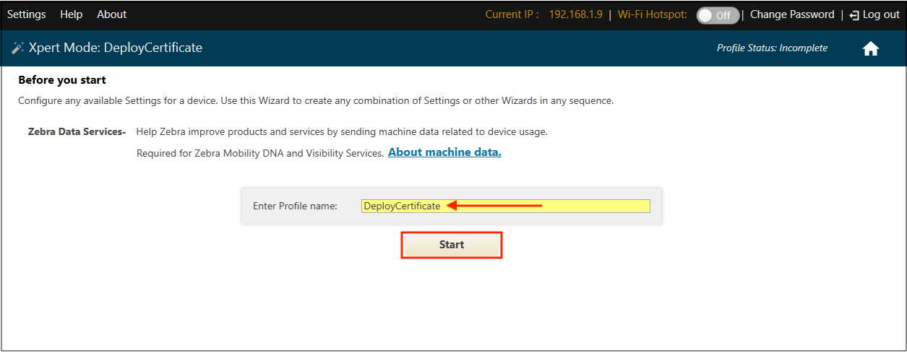
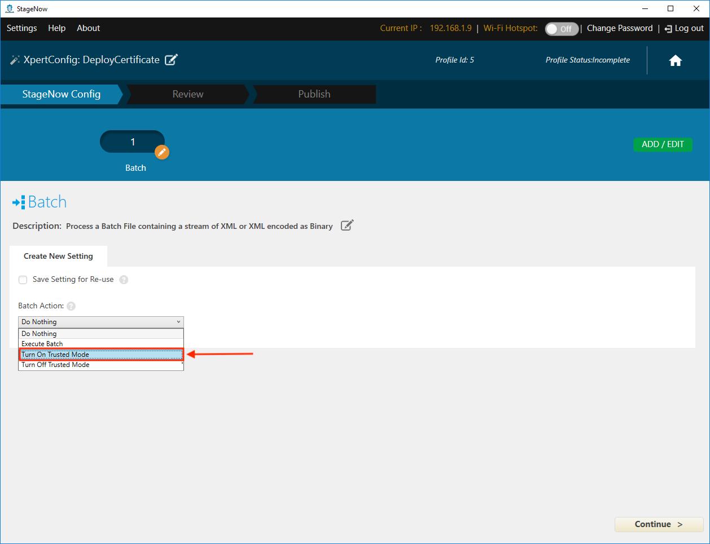
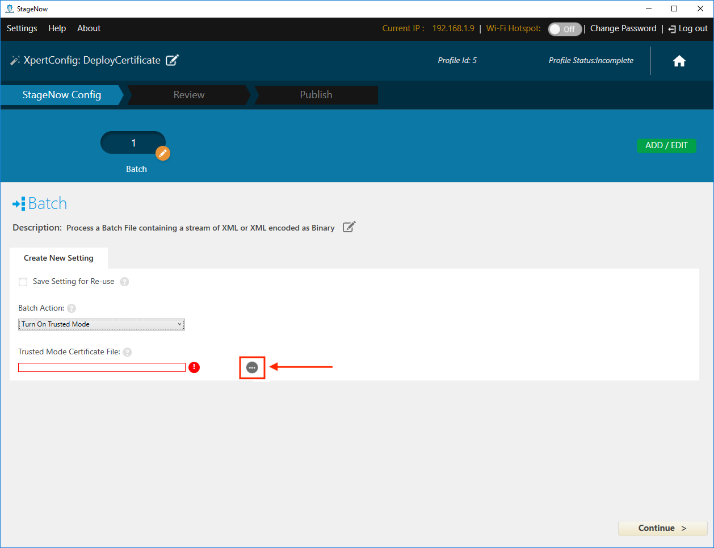
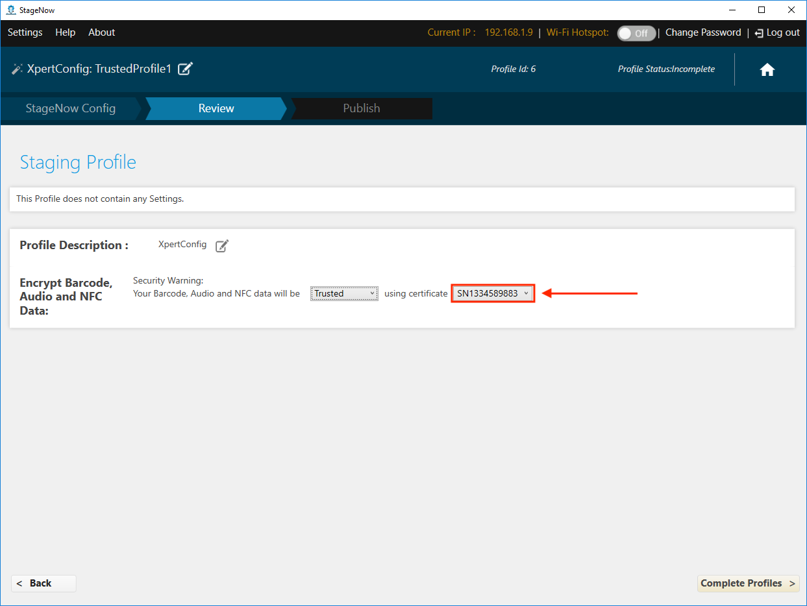
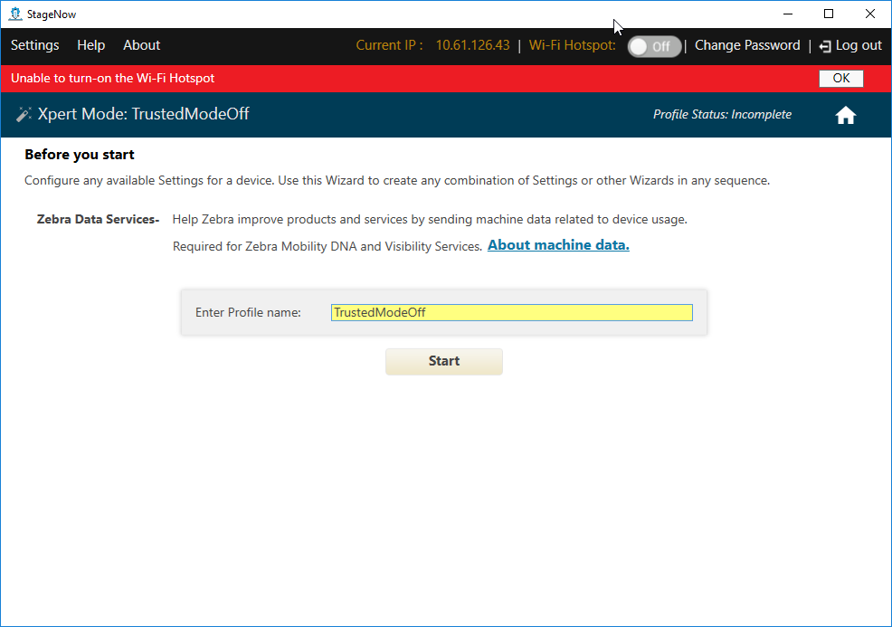
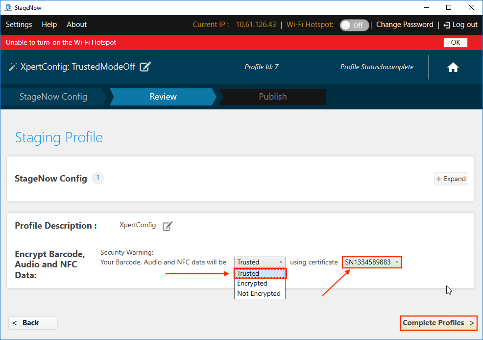

Overview
StageNow 4.0 (and later) supports Trusted Staging, which can protect devices with MX 9.2 and later from unauthorized staging. Trusted devices are created from a security certificate. Once a certificate is used to create a trusted device, the device can be staged only from barcodes created using the same security certificate.
This guide describes the process of importing an existing certificate into StageNow for use in Trusted Staging, and explains how to create a certificate if needed.
IMPORTANT:Access to Trusted Staging and Trusted Devices is possible only by Windows users with administrative privileges.
Requirements:
- Computer running Windows
- StageNow 4.0 (or later) installed
- Zebra device(s) with MX 9.2 or later
- Self-signed security "Trusted Certificate" (
.pfxfile of exactly 1024 bytes) - OpenSSL installed (if creating a Trusted Certificate*)
Process Snapshot:
- Import a Trusted Certificate* (
.pfxfile) into StageNow - Deploy the Trusted Certificate to device(s) to create Trusted Device(s)
NOTE:Such device(s) no longer accept standard ("untrusted") Profiles - Create Trusted Profile(s) for use on Trusted Device(s)
*If no Trusted Certificate exists, start with instructions for creating a Trusted Certificate at the end of this guide.
Create a Trusted Device
I. Import Certificate
This process requires StageNow to be running in admin mode.
- From the StageNow Home screen, click the "Trusted Certificates" button:
 Click image to enlarge; ESC to exit.
Click image to enlarge; ESC to exit.
- From the Trusted Certificates page, select a previously imported certificate from the list and skip to Step 5.
To import a new certificate, click the "Import Certificate" button: Click image to enlarge; ESC to exit.
Click image to enlarge; ESC to exit.
CAUTION:Certificate files must be exactly 1024 bytes in size. - Navigate to the
.pfxfile being imported: Click image to enlarge; ESC to exit.
Click image to enlarge; ESC to exit.
- Confirm that the imported file appears in the list of Trusted Certificates similar to the image below.
NOTE: When imported, the.pfxfile is encrypted and given a.cerfile extension. Click image to enlarge; ESC to exit.
Click image to enlarge; ESC to exit.
- Create a staging profile that pushes the certificate to the device(s) to become Trusted (next section).
Also see: How to create a self-signed certificate
II. Deploy Certificate to Device(s)
- From the Home screen, click the Create new Profile button:
 Click image to enlarge; ESC to exit.
Click image to enlarge; ESC to exit.
- Select "Xpert Mode" and the click "Create" button:
 Click image to enlarge; ESC to exit.
Click image to enlarge; ESC to exit.
- Enter a name for the deployment profile and click the "Start" button:
 Click image to enlarge; ESC to exit.
- Click the plus (+) sign on the "Batch" CSP line and click the "Add" button:
 Click image to enlarge; ESC to exit.
Click image to enlarge; ESC to exit.
- Select "Turn On Trusted Mode" from the drop-down menu:

Click image to enlarge; ESC to exit.
- Click the Navigation button to bring up an "Open" dialog (shown in Step 7):

Click image to enlarge; ESC to exit.
- Navigate to and select the certificate file (imported in Section I, Step 4) and click the "Open" button:
NOTE: When imported, the.pfxfile is encrypted and given a.cerfile extension. Click image to enlarge; ESC to exit.
Click image to enlarge; ESC to exit.
- Confirm that the
.cerfile appears and click the "Continue" button: Click image to enlarge; ESC to exit.
Click image to enlarge; ESC to exit.
- Select "Encrypted" from the drop-down menu as shown and click the "Complete Profiles" button:
 Click image to enlarge; ESC to exit.
Click image to enlarge; ESC to exit.
- Select the desired barcode type for the staging client and click the "Test" button to generate barcodes:
 Click image to enlarge; ESC to exit.
Click image to enlarge; ESC to exit.
- Use the device(s) to be made Trusted to scan the barcodes and deploy the certificate:
Click image to enlarge; ESC to exit.
IMPORTANT:All devices that scan barcodes generated this way become "Trusted Devices" and can no longer be staged with standard "untrusted" staging Profiles; they can be staged ONLY with Trusted Profiles created using the same certificate as was deployed to the device(s).
III. Create Trusted Staging Profile
Trusted Profiles are the same as standard ("untrusted") Profiles with one important exception: The final step adds a "Trusted" designation and requires selection of a security certificate.
To Create a Trusted Profile:
- From the Home screen, click the "Create new Profile" button. Before selecting a Wizard, be sure that MX 9.2 (or higher) is selected from the drop-down menu:
 Click image to enlarge; ESC to exit.
Click image to enlarge; ESC to exit.
- When naming, Zebra recommends selecting names that make the Profile easy to identify later:
 Click image to enlarge; ESC to exit.
Click image to enlarge; ESC to exit.
- In the final step of Profile creation, select "Trusted" from the drop-down menu:
 Click image to enlarge; ESC to exit.
Click image to enlarge; ESC to exit.
- From the the drop-down menu of certificates previously imported, select the certificate that matches the one deployed to target device(s):

Click image to enlarge; ESC to exit.
Trusted Profiles are identified in Profile lists by a green lock icon as in the sample image below:
 Click image to enlarge; ESC to exit.
Click image to enlarge; ESC to exit.
IMPORTANT: Trusted Devices can be staged ONLY with a Trusted Profile that contains the same certificate as was deployed to those devices.
See the Staging Profiles Guide for further details.
Turn Off Trusted Mode
If it becomes necessary to remove a device from Trusted Mode, simply create a Trusted Profile and select "Turn Off Trusted Mode" using the Batch CSP. Details are below.
To create a Trusted Profile turning off Trusted Mode:
- From the Home screen, click the Create new Profile button:
Click image to enlarge; ESC to exit.
- Select "Xpert Mode" and the click "Create" button:
Click image to enlarge; ESC to exit.
- Enter a name for the deployment profile and click the "Start" button:
 Click image to enlarge; ESC to exit.
- Click the plus (+) sign on the "Batch" CSP line and click the "Add" button:
Click image to enlarge; ESC to exit.
- Select "Turn Off Trusted Mode" from the drop-down menu and click the "Continue" button:
 Click image to enlarge; ESC to exit.
Click image to enlarge; ESC to exit.
- Select "Trusted" from the drop-down menu,
select the same certificate file used to put the device into Trusted Mode from its drop-down menu and
click the "Complete Profiles" button:  Click image to enlarge; ESC to exit.
- Select the desired barcode type for the staging client and click the "Test" button to generate barcodes:
 Click image to enlarge; ESC to exit.
Click image to enlarge; ESC to exit.
- Use the device(s) to be removed from Trusted Mode to scan the barcodes:
 Click image to enlarge; ESC to exit.
Click image to enlarge; ESC to exit.
The device is now removed from Trusted Mode and can be staged using ordinary staging Profiles.
Create a Trusted Certificate
This section describes how to generate a trusted certificate (.pfx file) for importing into StageNow to facilitate Trusted Staging. This processes uses OpenSSL and its command-line interface (CLI) to create a private key and certificate signing request (CSR) for submission to a certificate authority (CA) for signing.
Requirements:
- Computer running Windows
- OpenSSL installed
A familiarity with command-line tools is helpful for this section. Learn more about OpenSSL CLI commands.
Before beginning, download OpenSSL and install it.
I. Generate a private key and CSR
NOTE: This section describes how to create and use a private key to generate a certificate signing request (CSR). To prepare a CSR from an existing private key, skip to Step 4.
1. Open a command-prompt window (cmd.exe) and navigate to the folder containing OpenSSL.
2. Generate a private key with the desired file name (i.e. myPrivate.key) using the following command:
genrsa -des3 -out myPrivate.key 1024
- This RSA key can be protected with 1024-bit (shown) or 2048-bit Triple DES encryption.
- After Step 2, a pass-phrase prompt appears.
3. Create and enter a pass phrase and record it for later reference.
- A file called
myPrivate.keyis created in the current directory.
4. Generate a CSR file from the .key file created in the previous step using the following command:
req –new –key myPrivate.key -sha256 –out myPrivate.csr
- Several prompts appear for entering optional X.509 attributes of the certificate.
5. Enter optional information based on the environment or leave blank by hitting the ENTER key after each prompt.
- A file called
myPrivate.csris created in the current directory.
The certificate signing request myPrivate.csr can be submitted to a certificate authority. When the signed file is returned from the CA, proceed to Section III.
II. Generate a self-signed certificate
Perform steps in this section ONLY if a self-signed certificate is desired. If using a certificate already signed by a certificate authority, proceed to Section III.
Such certificates can be used for testing and other internal purposes, or as an interim solution while waiting for signing from a certificate authority. Self-signed certificates cause display of "signing certificate authority is unknown and not trusted" or a similar message on browsers. Use the following steps to create a self-signed certificate using OpenSSL.
6. Generate a temporary (one-year) certificate using the following command:
x509 -req -days 365 -in server.csr -signkey myPrivate.key -sha256 -out mySigned.crt
7. When prompted, enter the pass phrase for myPrivate.key created in the Step 3, above.
The mySigned.crt file is generated in the current folder. Go to Section III to complete the process.
III. Convert CRT to PEM
The final steps use the .key and .crt files to generate a .pfx certificate to import into StageNow.
8. At the command prompt, enter the following command:
pkcs12 -export -out trustedCert.pfx -inkey myPrivate.key -in mySigned.crt
The certificate trustedCert.pfx is ready to be imported into StageNow for use with Trusted Staging.